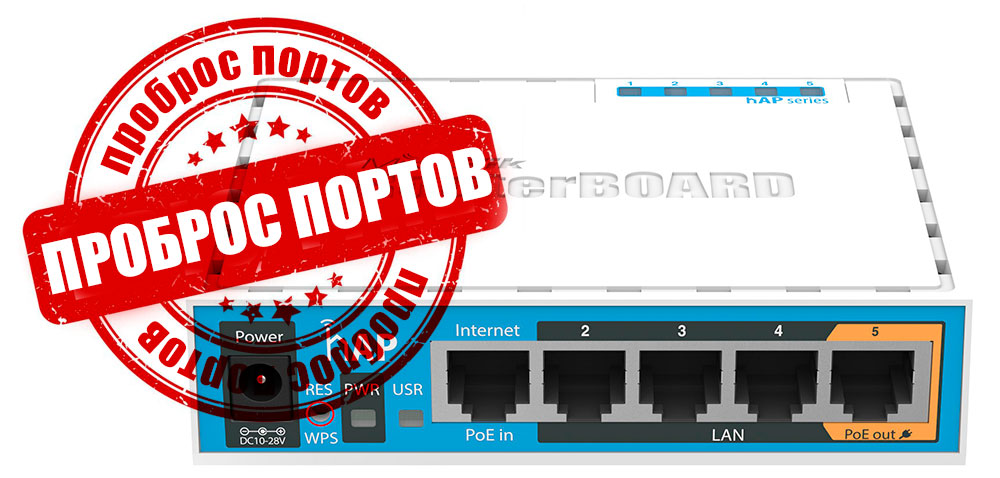
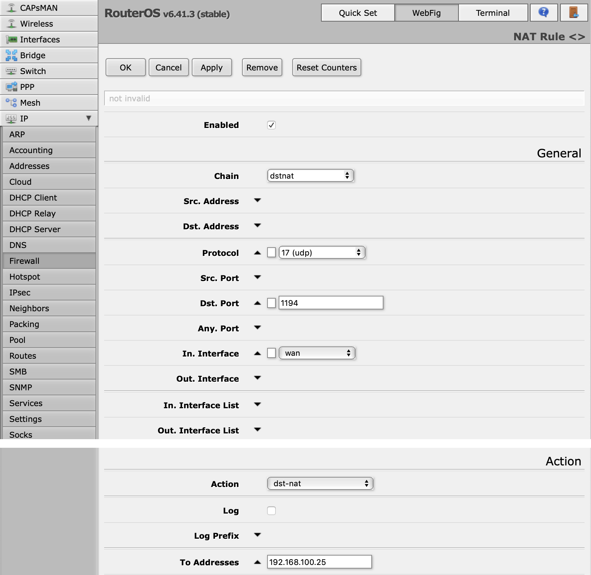

Проброс портов на MikroTik
Октябрь, 10th 2018Рубрика: Советы 2347
Подписаться на комментарии по RSS

Итак, допустим нам требуется переадресовать запросы к UDP порту 1194 на внутренний OpenVPN сервер. Управление переадресацией (пробросом портов) в MikroTik находится в разделе IP->Firewall->NAT. О том, что такое NAT, маскарад (masquerade) и проброс портов я уже рассказывал чуть ранее в блоге, сегодня будет практика.
Перейдя в настройки NAT мы видим, что одно правило тут уже есть — это тот самый «маскарад», без которого компьютеры внутри локальной сети не смогли бы выходить в интернет. Нам же требуется добавить правило для подключения извне к внутреннему серверу.
Для создания нового правила нажимаем кнопку "Add New" и настраиваем требуемые поля:
Chain (Цепочка). Определяет направление передачи данных — srcnat (из внутренней сети во внешнюю) или dstnat (из внешней сети во внутреннюю). В нашем случае выбираем dstnat.
Src. Address (исходный адрес) и Dst. Address (адрес назначения). Исходным адресом может быть абсолютно любой адрес в Интернете (если нам не требуется подключаться со строго определённого IP), а адресом назначения будет внешний адрес роутера, смысла его прописывать нет, потому оставляем оба пункта пустыми.
Protocol (протокол). Обязательное для заполнения поле, иначе мы не сможем указать номер порта. В моём примере тут будет udp.
Src. Port (исходящий порт), с которого удалённая машина инициирует соединение с нашим роутером. Нам это абсолютно без разницы, потому пропускаем.
Dst. Port (порт назначения) — а это как раз тот порт, на который мы хотим принимать соединение, опять же из примера это будет 1194.
Any. Port (любой порт) — тут можно указать значение, которое будет работать и как исходный порт и как порт назначения. Никогда не пользовался.
In. interface (входящий интерфейс) — интерфейс, который «слушает» указанный порт. В нашем случае мы принимаем соединения из интернет на wan интерфейсе.
Out. interface (исходящий интерфейс) — интерфейс, к которому подключен наш OpenVPN сервер и куда мы делаем переадресацию. Что-либо прописывать тут тоже не имеет смысла.
Далее идут узкоспециализированные разделы настроек Advanced и Extra, предназначенные для тонкого тюнинга (в моей практике пока не пригождались), потому их смело пропускаем.
Action (действие), которое следует выполнить после подключения на указанный порт:
Для проброса портов снаружи подходят действия dst-nat и netmap, в принципе можно использовать любое.
В поля To Addresses и To Ports прописываем адрес и порт OpenVPN-сервера, куда будут переадресовываться запросы.
Кнопкой "Apply", применяем настройки. Правило создано и всё должно работать.
